My first BPM Application
By means of the following example, it is explained that it is a Workflow. Topic: Booking flight tickets. This process is: Enter the reservation data through an operator; if the customer is not registered, the system automatically does it. Next, an availability check is made and if the result of this check is positive, the process is completed. Otherwise, the control is returned to the first item, where the details can be changed. This simplified example has only a few steps, but they are well communicated, diagramed and consistent. Here lies the importance of a Workflow: to automate controls that can be automated, with the least possible intervention from programmers. By following simple steps, a developer can build robust Workflow applications in GeneXus In sum, the idea behind a Workflow process is that a tight integration of the available tools (GeneXus tools, in this case) can provide seamless collaboration among all the information systems of a company, thus accelerating management processes and driving the business forward in a dynamic, vertical manner. Here you have a simple, practical example that illustrates the steps needed to complete it:
This is a simple example that shows you how to use GXflow within the IDE. It represents a simplified process for booking airline tickets, which consists of entering the reservation details into the system, with the operator registering any customer that is not registered. If the customer is registered already, the control will go straight to checking availability. If the reservation is available, the process ends, and if it's not available, the flow will return to where the reservation was entered to update the data. Step 1: Creating the objects that will be part of the processTwo transactions will be needed: Reservation and Customer. Reservation Transaction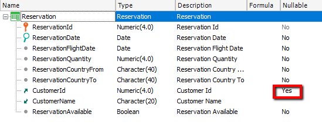 Notes: Note also that the CustomerId attribute is defined to allow nulls, which is necessary for the example to work properly, also ReservationId is auto number. Rules Rule to make the ReservationAvailable attribute invisible, as this attribute is used when the reservation is already entered and you want to indicate whether it's available or not. ReservationAvailable.Visible = False If Insert; Customer Transaction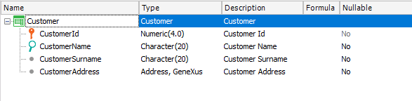 CustomerId is Autonumber AssignToCustomer ProcedureWe have the following procedure: Once the reservation and user are entered, it assigns that reservation to that user. Rules Parm(in:&ReservationId, in:&CustomerId); Variables ReservationId (based on the ReservationId attribute) CustomerId (based on the CustomerId attribute) Code
For each Reservation
Where ReservationId = &ReservationId
CustomerId = &CustomerId
Endfor
Step 2: Creating the activity diagram that models the processTo add an activity diagram all we have to do is add the Business Process Diagram object, like we do with any other object. 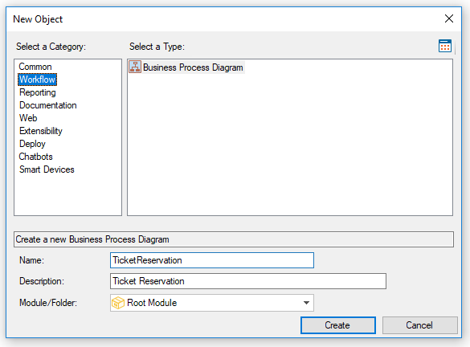 Step 3: Associating the objects to the diagram To mark the beginning of the process, we drag a None Start Event symbol. The first associated object will be the Reservation transaction. To associate it, drag it from the Folder View to the line that connects the Start and End connectors in the diagram. Or, drag a User Task from the Toolbox, to to the properties windows and press the button in the Application property. 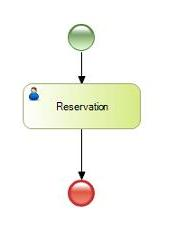 Relevant data with the same name and data type as the transaction's primary key is created right after the project is added. This data, just like the rest of the relevant information, will be known throughout the flow. The second step consists of adding the conditional that defines whether or not the customer is registered and associated with the reservation transaction. To do so, add the exclusive gateway symbol from the diagram toolbar (by default it is located on the right-hand side of the screen), as shown in the figure below. 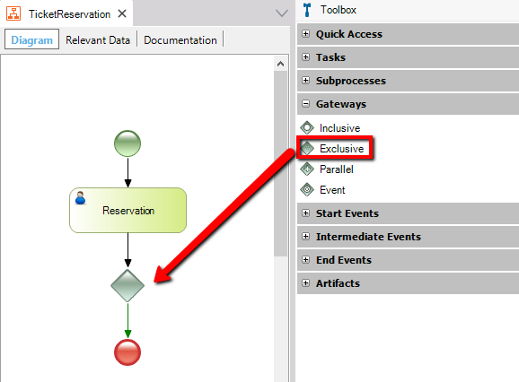 Once the gateway has been inserted, we have to define the condition that will make the flow follow the usual course or follow the alternative course to register a customer. First, we need to add the Customer transaction to the diagram and connect it with the conditional's alternative route, as follows: 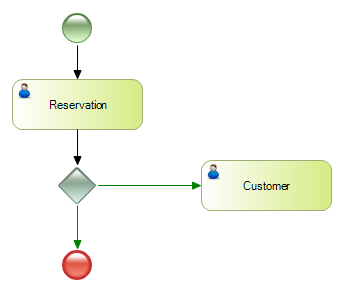 Note: To connect the gateway with the 'Customer' task, click the right-hand side of the conditional and drag the arrow to the left-hand side of the task. Its type is defined in the route properties. To complete the conditional we have to define the condition that will make the flow follow one route or the other. To this end, the IDE offers a condition editor that allows you to express conditions based on attributes and relevant data. Double-click the edge that connects the customer record and enters the following expression: 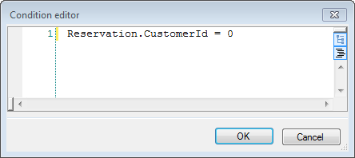 By defining this condition, non-registered customers (customerId = 0) are registered. Next, following the usual flow, the Reservation transaction is added again. This task evaluates whether the reservation is available to be issued; we'll change its name by pressing F2 button. 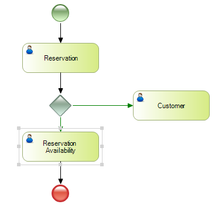 Now select the connector that goes to ReservationAvailability, go to properties and in Condition type select "Default" 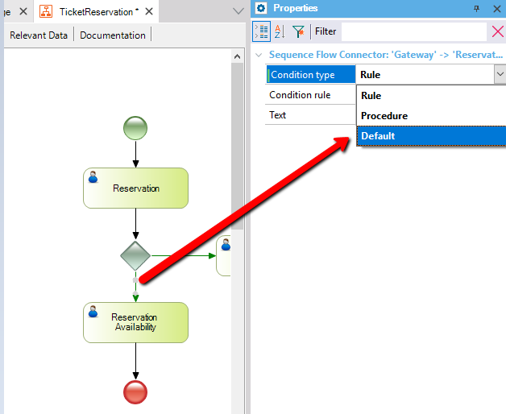 Netx, Double-clicking the gateway symbol displays a summary of the conditions, as shown in the figure below: 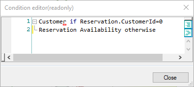 Once the reservation availability has been determined, another gateway must be defined as follows to evaluate the condition: 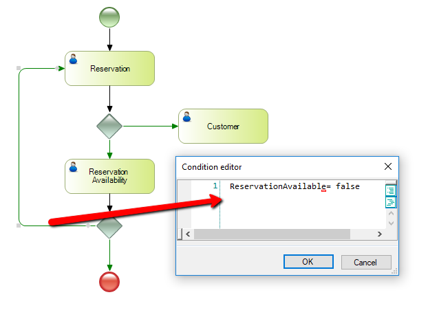 If the reservation is available, the process is finished. If it's not available, the flow goes back to the initial task in order to change the reservation details. To complete the flow, we have to define the alternative course to be followed when the customer is not registered. So, after registering the customer, we have to assign him or her to the reservation and check availability. To do so, we need to add the procedure previously created (AssignToCustomer) and the connection routes as follows: 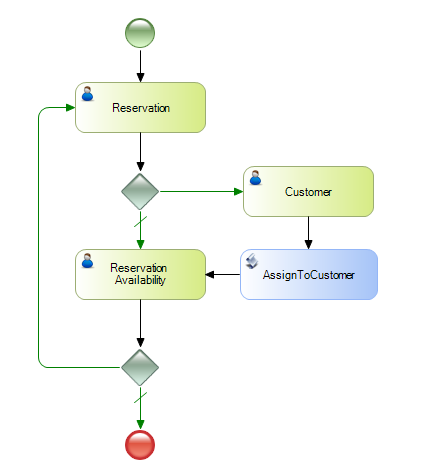 Once the procedure is added to the diagram, the parameter rule (parm) is automatically evaluated. If attributes or variables with the same name and type as the relevant data are found, they will be instantiated with their values. In this case, the &ReservationId and &CustomerId variables will be associated with the values of the corresponding relevant data. Step 4: Running the processLastly, the process is run. Before running the process for the first time, do a Build All (Build command menu option). Right-click the diagram listed in the Folder View and press the 'RUN'. 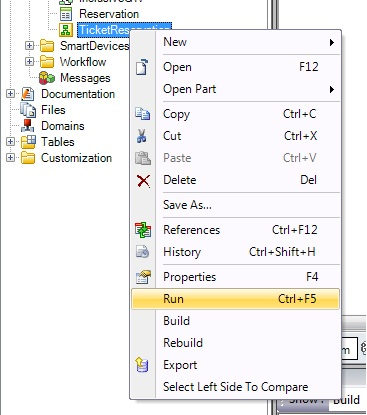 Next, GeneXus performs the necessary actions to run this diagram and show the changes made. The steps that follow are:
Whether or not all these steps are performed will depend on the changes made; that is to say, a change in the diagram will cause all its objects to be specified, generated and compiled, impacting the diagram. A browser will be automatically opened with the application as shown in the figure below: 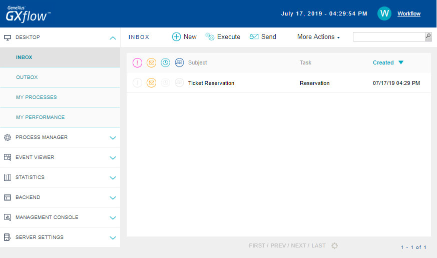 When the prototyper is executed, a new instance of the process to be prototyped is generated. It allows the developer to perform all the steps without defining roles or assigning them to the user that is prototyping. Below is the process flow for both cases: the first case corresponds to a customer that has to be registered, and the second case corresponds to a customer that is already registered in the system. Case 1: When the user needs to be registeredThe reservation details are entered and the CustomerId field is left blank (the customer is not registered yet).
Next, we have to register the customer. 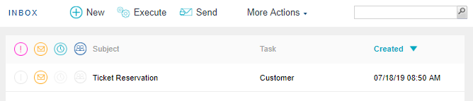 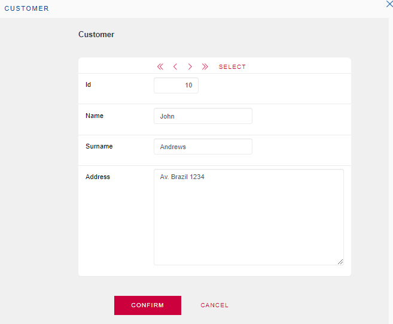 Once the reservation and customer are registered, the procedure that assigns the customer to the reservation is automatically executed. To end the process we have to define whether the reservation is available or not. 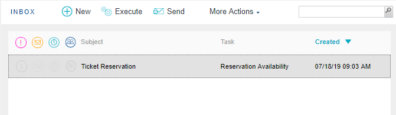 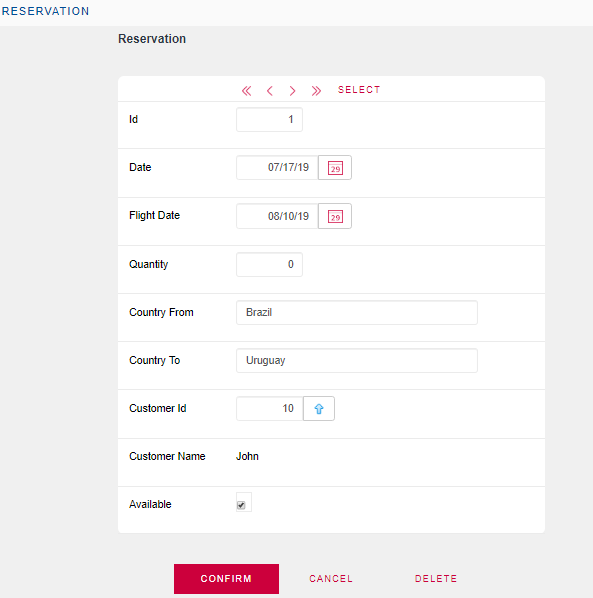 Case 2: When the customer is already registeredWe create a new task as shown in the figure below and enter the reservation details including the customer, who in this case is registered in the system. 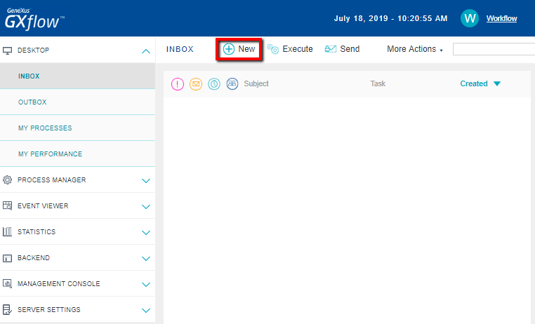 Next, the reservation is set to 'not available' and the flow returns to the beginning where the reservation data can be changed. Download TicketReservation.xpz See Also |